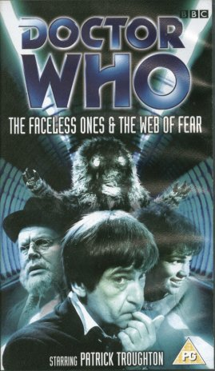
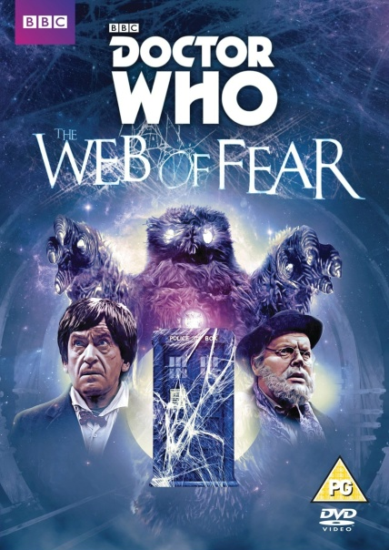
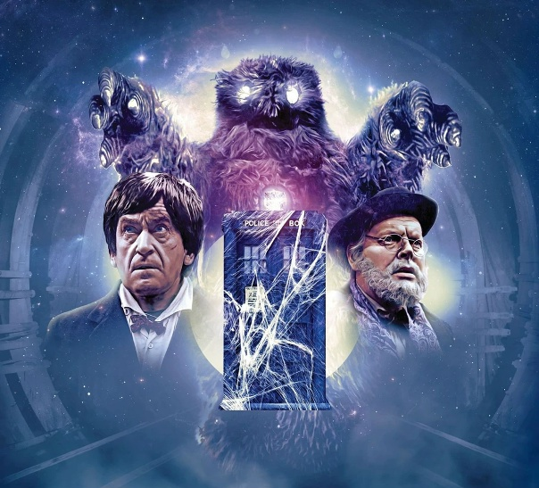
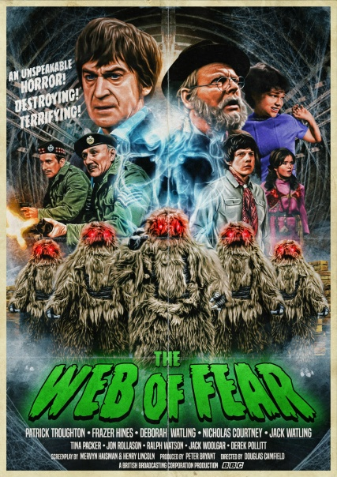

Эра Второго Доктора (5 сезон)
<<< НАЗАД ||| 5. Сеть страха ||| ДАЛЬШЕ >>>
|  |
|---|---|
+ Реконструкция (эпизод 3) Субтитры: Русские и Английские | |
+ Фанатская анимация (эпизод 3) Адам Баллок Субтитры: Русские и Английские | |
Черно-белая версия в соотношении сторон 4:3 (эпизод 3) Субтитры: Русские и Английские | |
Цветная анимация 16:9 (эпизод 3) Субтитры: Русские и Английские | |
-- Приквел к серии (Harry Robins) | -- Приквел к серии (TardisTimegirl) |
эп.3: Отрывок- Открывающая сцена (MissingPieces)
3 февраля - 9 марта 1968
6 эпизодов по 25 мин.
| Изначально все эпизоды утеряны * 1-й эпизод найден в 1970х годах - 16mm t/r * 2-й и с 4-го по 6-й эпизоды найдены в 2013 г. - 16mm t/r На 3-й эпизод имеется: * Реконструкция * Официальная ч/б и цветная анимация |
|---|
 |  |  помощник |  помощник |
«Сеть страха» — мрачная осада в сердце Лондона: туман окутывает город, а в лабиринте метро разрастается зловещая паутина, несущая гибель; Второй Доктор, Джейми и Виктория оказываются в эпицентре угрозы Великого Разума — того самого, что уже шептал из тибетских теней, а теперь тянет свои нити сквозь туннели, подчиняя йети и сея паранойю среди людей; рядом с ними — профессор Трэверс, чьи открытия оборачиваются кошмаром, и полковник Летбридж‑Стюарт, впервые встающий на защиту Земли; тон истории — тягучий и удушающий, будто сама паутина сжимает время, и каждый шаг по рельсам отзывается эхом надвигающейся катастрофы, которую можно остановить лишь ценой отчаянной смелости и точного расчёта.
 VHS (1эп.) - ноябрь 2003 |  DVD - 24 февраля 2014 | Blu-ray - 16 августа 2021 * Версия в нашей группе |
|---|




